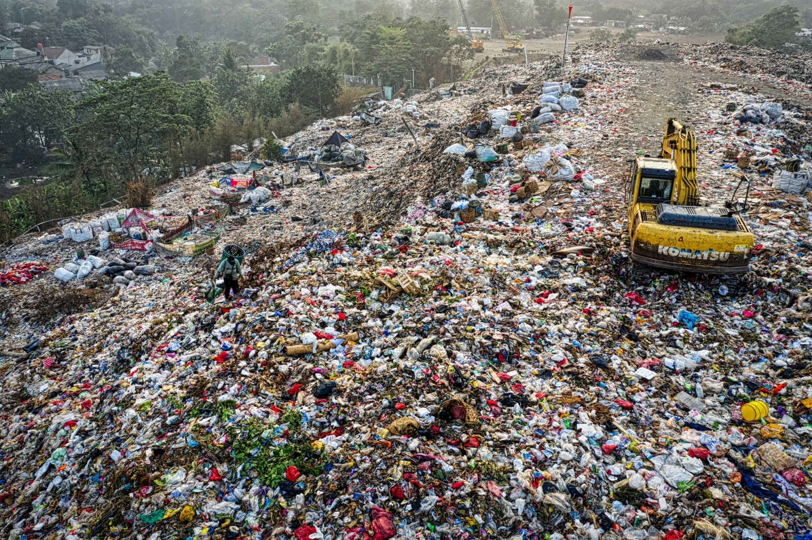

How bad is improper waste management?
Disposing of waste has huge environmental impacts and can cause serious problems. Some waste will eventually rot, but not all, and in the process it may smell, or generate methane gas, which is explosive and contributes to the greenhouse effect. Leachate produced as waste decomposes may cause pollution. Badly-managed landfill sites may attract vermin or cause litter. Incinerating waste also causes problems, because plastics tend to produce toxic substances, such as dioxins, when they are burnt. Gases from incineration may cause air pollution and contribute to acid rain, while the ash from incinerators may contain heavy metals and other toxins.